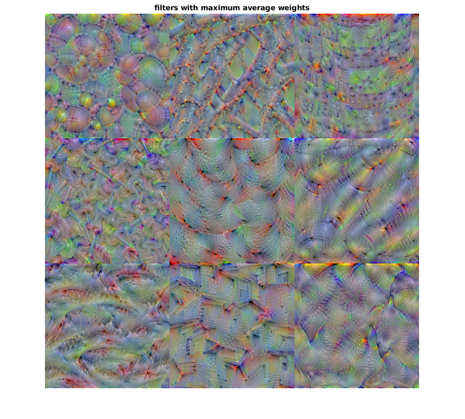

Localizing nodes for feathers and beaks
Contents
- Introduction
- Load net and imagine water ouzel
- Find which nodes in previous layer are important
- What can we tell about fc7?
- Go further with beaks, mid right filter (node 478)
- What can we tell about fc6?
- Go further with beaks down to convolutional layers (node 486)
- So what have we learned so far?
- Visualize all 512 layers
Introduction
The idea of this script is to start with a class of one bird, the one nesting in the 21st node of VGG16 output layer, and try trace back where the beak and feathers are identified. The approach is to check recursively which nodes in previous layers contribute most to the current layer. So potentially we could analyse the net and say, beaks of water ouzel are detected in node so and so.
Load net and imagine water ouzel
Here we want to see feathers and beaks, maybe also a whole bird.
net=vgg16; I=deepDreamImage(net,39,21,'PyramidLevels',3,'NumIterations',30); I=deprocessImage(I); figure; imshow(I);
|============================================|
| Pyramid | Iteration | Activation |
| Level | | Strength |
|============================================|
| 1 | 1 | 1.38 |
| 1 | 2 | 0.38 |
| 1 | 3 | 6.27 |
| 1 | 4 | 12.30 |
| 1 | 5 | 21.03 |
| 3 | 25 | 317.72 |
| 3 | 26 | 306.89 |
| 3 | 27 | 326.14 |
| 3 | 28 | 349.04 |
| 3 | 29 | 333.61 |
| 3 | 30 | 329.32 |
|============================================|
Find which nodes in previous layer are important
we have 1000 by 4096 weights to pass from fc7 layer to fc8, so the ones we are interested in are the 21st row. We want to check the idea that high weights imply that the corresponding nodes below are important. So we look for the top weights in layer 39 and visualize these nodes in the layer below (36). For comparison we also visualize minima nodes.
layer=39; % fc8 layerBelow=36; % fc7 Nfilters=9; %Number of nodes to visualize [~,order]=sort(net.Layers(layer).Weights(21,:)); mini=order(1:Nfilters); % minima weights maxi=order(end-Nfilters+1:end); % maxima weights disp(['high weight filters:',sprintf('\n%d %d %d',maxi)]) fprintf('\n') disp(['low weight filters:',sprintf('\n%d %d %d',mini)]) top=uint8(zeros(438,438,3,9)); bottom=top; for filti=1:Nfilters I=deepDreamImage(net,layerBelow,maxi(filti),'PyramidLevels',3,'NumIterations',30,'verbose',false); top(:,:,:,filti)=deprocessImage(I); I=deepDreamImage(net,layerBelow,mini(filti),'PyramidLevels',3,'NumIterations',30,'verbose',false); bottom(:,:,:,filti)=deprocessImage(I); end figure; subplot(1,2,1) montage(top) title('Highest weights for layer fc8') subplot(1,2,2) montage(bottom) title('Lowest weights for layer fc8')
high weight filters: 2771 2143 2385 923 2579 478 562 1188 1663 low weight filters: 2078 1676 2845 767 1540 269 2310 1865 3457
What can we tell about fc7?
While fc8 layer gives us classes like "Water Ouzel", fc7 has parts of classes. Nodes with high weight for Ouzel capture eyes, feathers and maybe beak. There are definitely lots of feathers. I would dare say there are even wings, with different feather arrangement (e.g. node 2385, top right). I think I see beak in layer 478. I expect more beaky nodes to lay lower than the top 9 we visualized, but for what we are trying to achieve, let's continue with node 478. P.S, did you notice the feathers in the low weights node 2310? May belong to another bird.
Go further with beaks, mid right filter (node 478)
So what are the nodes in layer fc6 that are most important for nnode 478 in layer fc7? Let's visualize the 9 nodes with max weight.
layer=36; layerBelow=33; % 'fc6' filter=478; [~,order]=sort(net.Layers(layer).Weights(filter,:)); maxi=order(end-Nfilters+1:end); disp(['chosen filters:',sprintf('\n%d %d %d',maxi)]) top=uint8(zeros(438,438,3,9)); for filti=1:Nfilters I=deepDreamImage(net,layerBelow,maxi(filti),'PyramidLevels',3,'NumIterations',30,'verbose',false); top(:,:,:,filti)=deprocessImage(I); end figure; montage(top)
chosen filters: 486 744 1340 266 1669 3483 2866 279 604 Warning: Image is too big to fit on screen; displaying at 67%
What can we tell about fc6?
We should expect further riduction in filter complexity. While node 478 of fc7 seems to percieve both beaks and eyes, contributing nodes might be sensitive to one of them. To some degree this seems to be true when we look at the above visualization. About half of the 9 nodes respond to eyes, and I think node 486 (top left) responds to beaks. But look at bottom right node (604), there I see almost a complete bird, wigs, beak, perhapse with no eye. But we must cotinue with one node to go further down to the last convolutional layer, conv5_3. As we started this quest with beaks, let it be node 486.
Go further with beaks down to convolutional layers (node 486)
We had it easy fith fully connected layers, since there was one weight connecting one node in current layer to one in the layer below. But look here: we have 4096 nodes in fc6 and 512 filters in node conv5_3, but instead of having a set of 4096 by 512 weights we have 4096 by 25088. This has to do with the fact that each filter is a 7 by 7 matrix (after maxpooling). Layer fc6, instead of collecting information from whole filters 512 in number, collects information from every grid point of the filters. So what to do now? We cannot visualize top weight filters. Maximum weight for node 486 is for 15442 index. This falls somewhere inside filter 316 by ceil(15442/49). So we can visualize the filters within which the highest weights were. Alternatively, we can visualize the filters that on average gave the highest set of 49 weights. Or should we average positive weights only to consider the ReLU? First thing's first, filters with peak weights (no averaging).
layer=33; layerBelow=30; % 'conv5_3' filter=486; [~,order]=sort(net.Layers(layer).Weights(filter,:)); maxi=ceil(order/49); % Here we have overlap, four of the nine highest weights fall within filter % 362, so we choose the unique top 9 filters with a loop. choice=[]; while length(choice)<9 choice=[choice,maxi(end)]; maxi(end)=[]; choice=unique(choice); end disp(['chosen filters:',sprintf('\n%d %d %d',choice)]) % no visualizing our choice of 9 filters top=uint8(zeros(383,383,3,9)); for filti=1:Nfilters I=deepDreamImage(net,layerBelow,choice(filti),'PyramidLevels',3,'NumIterations',30,'verbose',false); top(:,:,:,filti)=deprocessImage(I); end figure; montage(top) title('filters with top activity') % Now average filter weights w=reshape(net.Layers(layer).Weights(filter,:),[7,7,512]); avg=squeeze(mean(mean(w))); [~,order]=sort(avg); maxi=order(end-Nfilters+1:end); disp(['chosen filters:',sprintf('\n%d %d %d',maxi)]) top=uint8(zeros(383,383,3,9)); for filti=1:Nfilters I=deepDreamImage(net,layerBelow,maxi(filti),'PyramidLevels',3,'NumIterations',30,'verbose',false); top(:,:,:,filti)=deprocessImage(I); end figure; montage(top) title('filters with maximum average weights') % Now lets sum only non negative weights w(w<=0)=nan; posSum=squeeze(nansum(nansum(w))); [~,order]=sort(avg); maxi=order(end-Nfilters+1:end); disp(['chosen filters:',sprintf('\n%d %d %d',maxi)]) top=uint8(zeros(383,383,3,9)); for filti=1:Nfilters I=deepDreamImage(net,layerBelow,maxi(filti),'PyramidLevels',3,'NumIterations',30,'verbose',false); top(:,:,:,filti)=deprocessImage(I); end figure; montage(top) title('filters with maximum sum of positive weights')
chosen filters: 102 156 198 255 316 318 322 362 502 chosen filters: 246 286 257 198 318 60 354 102 362 
Four nodes in the above images are in common. and I can't tell which approach is better. I can also not say if a certain filter is really related to a beak. Maybe a beak is the sum of these features but I think we did not get to the bottom of it. And the feathers are here again (node 502). Although this is no beak, this is interesting, because we see a relatively complex pattern here, while other nodes seem to capture simpler features.
So what have we learned so far?
I am not so sure. We have a challenge when going down from fully connected to convolutional layers, but we chose beaks, which are hard, or at least less represented than feathers in the top weights we explored. I guess we have to keep on digging, looking for beaks in other branches, and also to try this approach with other bird features.
Visualize all 512 layers
%top=uint8(zeros(196,196,3,512)); for filti=1:512 %I=deepDreamImage(net,layerBelow,filti,'PyramidLevels',1,'NumIterations',30,'verbose',false); %top(:,:,:,filti)=deprocessImage(I); end figure; montage(top)